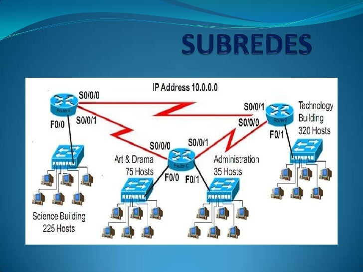
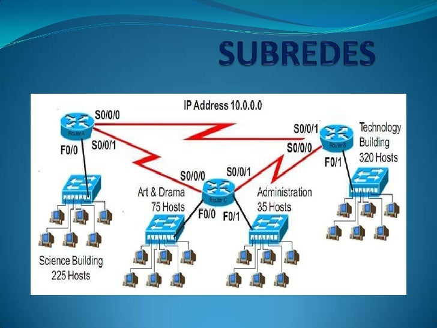

¿Qué es el subneteo?
El subneteo es el proceso de dividir una red IP en subredes más pequeñas, para mejorar la organización, seguridad y uso eficiente del espacio de direcciones IP.
El subneteo es el proceso de dividir una red IP en subredes más pequeñas, para mejorar la organización, seguridad y uso eficiente del espacio de direcciones IP.
| Máscara | # Subredes | Hosts/Subred |
|---|---|---|
| /24 | 1 | 254 |
| /26 | 4 | 62 |
| /30 | 64 | 2 |
Para saber a qué subred pertenece una IP, se aplica la máscara de subred mediante una operación AND:
Para saber qué IP corresponde al host #X dentro de una subred:
| Etiqueta | ¿Para qué sirve? | ¿Cómo funciona? |
|---|---|---|
| <header> | Encabezado de la página | Incluye títulos o logotipos; va al inicio del sitio. |
| <nav> | Menú de navegación | Contiene los enlaces principales del sitio web. |
| <main> | Contenido principal | Envuelve el contenido específico de esa página. |
| <section> | Secciones temáticas | Agrupa contenido relacionado dentro del main. |
| <article> | Contenido independiente | Cada artículo puede leerse de forma aislada. |
| <aside> | Contenido complementario | Sirve para tips, anuncios o referencias externas. |
| <footer> | Pie de página | Incluye créditos, enlaces o contactos al final. |